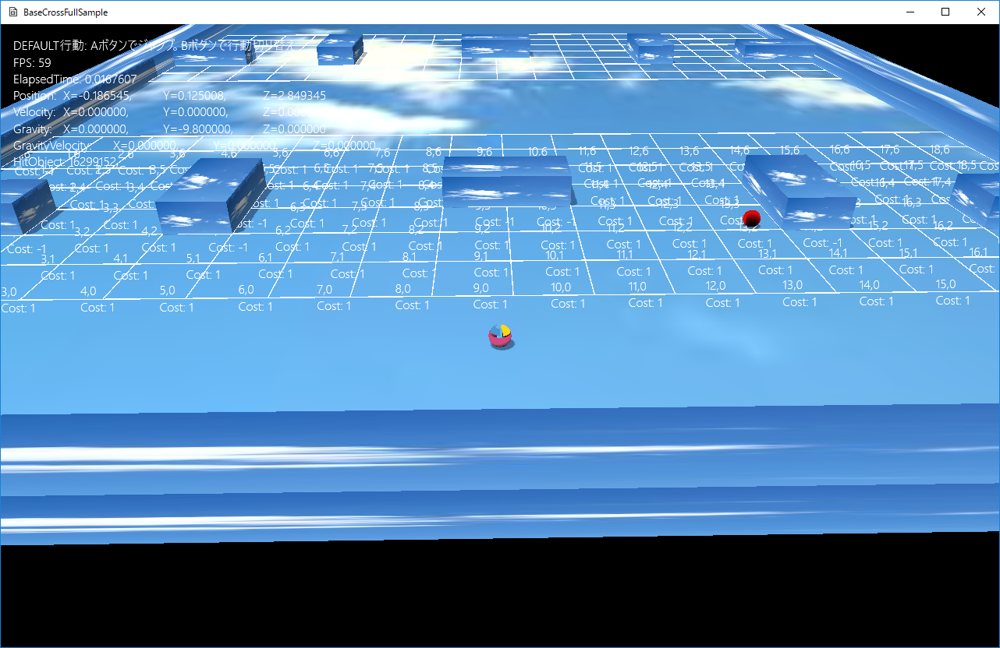

図0103a
//セルマップの作成
void GameStage::CreateStageCellMap() {
auto Group = CreateSharedObjectGroup(L"CellMap");
float PieceSize = 1.0f;
auto Ptr = AddGameObject<StageCellMap>(Vector3(-10.0f, 0, 4.0f),PieceSize,20,7);
//セルマップの区画を表示する場合は以下の設定
Ptr->SetDrawActive(true);
//さらにセルのインデックスとコストを表示する場合は以下の設定
Ptr->SetCellStringActive(true);
SetSharedGameObject(L"StageCellMap1", Ptr);
//グループに追加
Group->IntoGroup(Ptr);
Ptr = AddGameObject<StageCellMap>(Vector3(-10.0f, 0, 16.0f), PieceSize, 20, 7);
//セルマップの区画を表示する場合は以下の設定
Ptr->SetDrawActive(true);
//さらにセルのインデックスとコストを表示する場合は以下の設定
//Ptr->SetCellStringActive(true);
SetSharedGameObject(L"StageCellMap2", Ptr);
//グループに追加
Group->IntoGroup(Ptr);
Ptr = AddGameObject<StageCellMap>(Vector3(-10.0f, 0, 28.0f), PieceSize, 20, 7);
//セルマップの区画を表示する場合は以下の設定
//Ptr->SetDrawActive(true);
//さらにセルのインデックスとコストを表示する場合は以下の設定
//Ptr->SetCellStringActive(false);
SetSharedGameObject(L"StageCellMap3", Ptr);
//グループに追加
Group->IntoGroup(Ptr);
}
auto Group = CreateSharedObjectGroup(L"CellMap");
float PieceSize = 1.0f;
auto Ptr = AddGameObject<StageCellMap>(Vector3(-10.0f, 0, 4.0f),PieceSize,20,7);
//セルマップの区画を表示する場合は以下の設定
Ptr->SetDrawActive(true);
//さらにセルのインデックスとコストを表示する場合は以下の設定
Ptr->SetCellStringActive(true);
SetSharedGameObject(L"StageCellMap1", Ptr);
//グループに追加
Group->IntoGroup(Ptr);
void GameStage::OnCreate() {
try {
//リソースの作成
CreateResourses();
//ビューとライトの作成
CreateViewLight();
//プレートの作成
CreatePlate();
//セルマップの作成
CreateStageCellMap();
//固定のボックスの作成
CreateFixedBox();
//プレーヤーの作成
CreatePlayer();
//敵の作成
CreateEnemy();
}
catch (...) {
throw;
}
}
void FixedBox::OnCreate() {
auto PtrTransform = GetComponent<Transform>();
PtrTransform->SetScale(m_Scale);
PtrTransform->SetRotation(m_Rotation);
PtrTransform->SetPosition(m_Position);
//衝突判定
auto PtrObb = AddComponent<CollisionObb>();
PtrObb->SetFixed(true);
//影をつける
auto ShadowPtr = AddComponent<Shadowmap>();
ShadowPtr->SetMeshResource(L"DEFAULT_CUBE");
auto PtrDraw = AddComponent<PNTStaticDraw>();
PtrDraw->SetMeshResource(L"DEFAULT_CUBE");
PtrDraw->SetOwnShadowActive(true);
PtrDraw->SetTextureResource(L"SKY_TX");
}
//衝突判定
auto PtrObb = AddComponent<CollisionObb>();
PtrObb->SetFixed(true);
//固定のボックスの作成
void GameStage::CreateFixedBox() {
//配列の初期化
vector< vector<Vector3> > Vec = {
{
Vector3(1.0f, 0.5f, 40.0f),
Vector3(0.0f, 0.0f, 0.0f),
Vector3(9.5f, 0.25f, 20.0f)
},
//中略
};
//ボックスのグループを作成
auto BoxGroup = CreateSharedObjectGroup(L"FixedBoxes");
//オブジェクトの作成
for (auto v : Vec) {
auto BoxPtr = AddGameObject<FixedBox>(v[0], v[1], v[2]);
//ボックスのグループに追加
BoxGroup->IntoGroup(BoxPtr);
}
//セルマップ内にFixedBoxの情報をセット
auto Group = GetSharedObjectGroup(L"CellMap");
//セルマップグループを取得
for (auto& gv : Group->GetGroupVector()) {
auto MapPtr = dynamic_pointer_cast<StageCellMap>(gv.lock());
if (MapPtr) {
//セルマップからセルの配列を取得
auto& CellVec = MapPtr->GetCellVec();
//ボックスグループからボックスの配列を取得
auto& BoxVec = BoxGroup->GetGroupVector();
vector<AABB> ObjectsAABBVec;
for (auto& v : BoxVec) {
auto FixedBoxPtr = dynamic_pointer_cast<FixedBox>(v.lock());
if (FixedBoxPtr) {
auto ColPtr = FixedBoxPtr->GetComponent<CollisionObb>();
//ボックスの衝突判定かラッピングするAABBを取得して保存
ObjectsAABBVec.push_back(ColPtr->GetWrappingAABB());
}
}
//セル配列からセルをスキャン
for (auto& v : CellVec) {
for (auto& v2 : v) {
for (auto& vObj : ObjectsAABBVec) {
if (HitTest::AABB_AABB_NOT_EQUAL(v2.m_PieceRange, vObj)) {
//ボックスのABBとNOT_EQUALで衝突判定
v2.m_Cost = -1;
break;
}
}
}
}
}
}
}
//--------------------------------------------------------------------------------------
/// デフォルトステート
//--------------------------------------------------------------------------------------
class EnemyDefault : public ObjState<Enemy>
{
EnemyDefault() {}
public:
//ステートのインスタンス取得
DECLARE_SINGLETON_INSTANCE(EnemyDefault)
virtual void Enter(const shared_ptr<Enemy>& Obj)override;
virtual void Execute(const shared_ptr<Enemy>& Obj)override;
virtual void Exit(const shared_ptr<Enemy>& Obj)override;
};
//--------------------------------------------------------------------------------------
/// プレイヤーを追いかけるステート
//--------------------------------------------------------------------------------------
class EnemySeek : public ObjState<Enemy>
{
EnemySeek() {}
public:
//ステートのインスタンス取得
DECLARE_SINGLETON_INSTANCE(EnemySeek)
virtual void Enter(const shared_ptr<Enemy>& Obj)override;
virtual void Execute(const shared_ptr<Enemy>& Obj)override;
virtual void Exit(const shared_ptr<Enemy>& Obj)override;
};
//ステートのインスタンス取得
DECLARE_SINGLETON_INSTANCE(EnemyDefault)
static shared_ptr<EnemyDefault> Instance();
//--------------------------------------------------------------------------------------
/// デフォルトステート
//--------------------------------------------------------------------------------------
//ステートのインスタンス取得
IMPLEMENT_SINGLETON_INSTANCE(EnemyDefault)
void EnemyDefault::Enter(const shared_ptr<Enemy>& Obj) {
}
void EnemyDefault::Execute(const shared_ptr<Enemy>& Obj) {
if (!Obj->DefaultBehavior()) {
Obj->GetStateMachine()->ChangeState(EnemySeek::Instance());
}
}
void EnemyDefault::Exit(const shared_ptr<Enemy>& Obj) {
}
//--------------------------------------------------------------------------------------
/// プレイヤーを追いかけるステート
//--------------------------------------------------------------------------------------
//ステートのインスタンス取得
IMPLEMENT_SINGLETON_INSTANCE(EnemySeek)
void EnemySeek::Enter(const shared_ptr<Enemy>& Obj) {
auto PtrSeek = Obj->GetComponent<SeekSteering>();
PtrSeek->SetUpdateActive(true);
}
void EnemySeek::Execute(const shared_ptr<Enemy>& Obj) {
if (!Obj->SeekBehavior()) {
Obj->GetStateMachine()->ChangeState(EnemyDefault::Instance());
}
}
void EnemySeek::Exit(const shared_ptr<Enemy>& Obj) {
auto PtrSeek = Obj->GetComponent<SeekSteering>();
PtrSeek->SetUpdateActive(false);
}
//ステートのインスタンス取得
IMPLEMENT_SINGLETON_INSTANCE(EnemyDefault)
shared_ptr<EnemyDefault> EnemyDefault::Instance() { static shared_ptr<EnemyDefault> instance; if(!instance) { instance = shared_ptr<EnemyDefault>(new EnemyDefault); } return instance; }
class Enemy : public GameObject {
weak_ptr<StageCellMap> m_CelMap;
Vector3 m_Scale;
Vector3 m_StartRotation;
Vector3 m_StartPosition;
vector<CellIndex> m_CellPath;
//現在の自分のセルインデックス
int m_CellIndex;
//めざす（次の）のセルインデックス
int m_NextCellIndex;
//ターゲットのセルインデックス
int m_TargetCellIndex;
shared_ptr<StateMachine<Enemy>> m_StateMachine;
public:
//構築と破棄
Enemy(const shared_ptr<Stage>& StagePtr,
const shared_ptr<StageCellMap>& CellMap,
const Vector3& Scale,
const Vector3& Rotation,
const Vector3& Position
);
virtual ~Enemy();
//プレイヤーの検索
bool SearchPlayer();
//デフォルト行動
bool DefaultBehavior();
//Seek行動
bool SeekBehavior();
//アクセサ
shared_ptr< StateMachine<Enemy> > GetStateMachine() const {
return m_StateMachine;
}
//初期化
virtual void OnCreate() override;
//操作
virtual void OnUpdate() override;
virtual void OnLastUpdate() override;
};
weak_ptr<StageCellMap> m_CelMap;
void Enemy::OnCreate() {
auto PtrTransform = GetComponent<Transform>();
PtrTransform->SetPosition(m_StartPosition);
PtrTransform->SetScale(m_Scale);
PtrTransform->SetRotation(m_StartRotation);
//重力をつける
auto PtrGravity = AddComponent<Gravity>();
//Rigidbodyをつける
auto PtrRigid = AddComponent<Rigidbody>();
//反発係数は0.5（半分）
PtrRigid->SetReflection(0.5f);
auto PtrSeek = AddComponent<SeekSteering>();
PtrSeek->SetUpdateActive(false);
//パス検索
auto MapPtr = m_CelMap.lock();
if (!MapPtr) {
throw BaseException(
L"セルマップが不定です",
L"if (!MapPtr) ",
L" Enemy::OnCreate()"
);
}
auto PathPtr = AddComponent<PathSearch>(MapPtr);
//SPの衝突判定をつける
auto PtrColl = AddComponent<CollisionSphere>();
PtrColl->SetIsHitAction(IsHitAction::AutoOnParent);
//影をつける
auto ShadowPtr = AddComponent<Shadowmap>();
ShadowPtr->SetMeshResource(L"DEFAULT_SPHERE");
auto PtrDraw = AddComponent<PNTStaticDraw>();
PtrDraw->SetMeshResource(L"DEFAULT_SPHERE");
PtrDraw->SetTextureResource(L"TRACE2_TX");
//透明処理をする
SetAlphaActive(true);
m_StateMachine = make_shared<StateMachine<Enemy>>(GetThis<Enemy>());
m_StateMachine->ChangeState(EnemyDefault::Instance());
}
//パス検索
auto MapPtr = m_CelMap.lock();
if (!MapPtr) {
throw BaseException(
L"セルマップが不定です",
L"if (!MapPtr) ",
L" Enemy::OnCreate()"
);
}
auto PathPtr = AddComponent<PathSearch>(MapPtr);
m_StateMachine = make_shared<StateMachine<Enemy>>(GetThis<Enemy>());
m_StateMachine->ChangeState(EnemyDefault::Instance());
void Enemy::OnUpdate() {
//ステートマシンのUpdateを行う
//この中でステートの切り替えが行われる
m_StateMachine->Update();
}
bool Enemy::DefaultBehavior() {
auto PtrRigid = GetComponent<Rigidbody>();
auto Velo = PtrRigid->GetVelocity();
Velo *= 0.95f;
PtrRigid->SetVelocity(Velo);
auto MapPtr = m_CelMap.lock();
if (MapPtr) {
auto PlayerPtr = GetStage()->GetSharedGameObject<Player>(L"Player");
auto PlayerPos = PlayerPtr->GetComponent<Transform>()->GetPosition();
CellIndex PlayerCell;
if (MapPtr->FindCell(PlayerPos, PlayerCell)) {
return false;
}
}
return true;
}
MapPtr->FindCell(PlayerPos, PlayerCell)
bool Enemy::SeekBehavior() {
auto PlayerPtr = GetStage()->GetSharedGameObject<Player>(L"Player");
auto PlayerPos = PlayerPtr->GetComponent<Transform>()->GetPosition();
auto MapPtr = m_CelMap.lock();
if (MapPtr) {
if (SearchPlayer()) {
auto PtrSeek = GetComponent<SeekSteering>();
if (m_NextCellIndex == 0) {
//中略
}
else {
//中略
}
return true;
}
else {
//中略
}
}
return false;
}
bool Enemy::SearchPlayer() {
auto MapPtr = m_CelMap.lock();
if (MapPtr) {
auto PathPtr = GetComponent<PathSearch>();
auto PlayerPtr = GetStage()->GetSharedGameObject<Player>(L"Player");
auto PlayerPos = PlayerPtr->GetComponent<Transform>()->GetPosition();
m_CellPath.clear();
//パス検索をかける
if (PathPtr->SearchCell(PlayerPos, m_CellPath)) {
//検索が成功した
m_CellIndex = 0;
m_TargetCellIndex = m_CellPath.size() - 1;
if (m_CellIndex == m_TargetCellIndex) {
//すでに同じセルにいる
m_NextCellIndex = m_CellIndex;
}
else {
//離れている
m_NextCellIndex = m_CellIndex + 1;
}
return true;
}
else {
//失敗した
m_CellIndex = -1;
m_NextCellIndex = -1;
m_TargetCellIndex = -1;
}
}
return false;
}